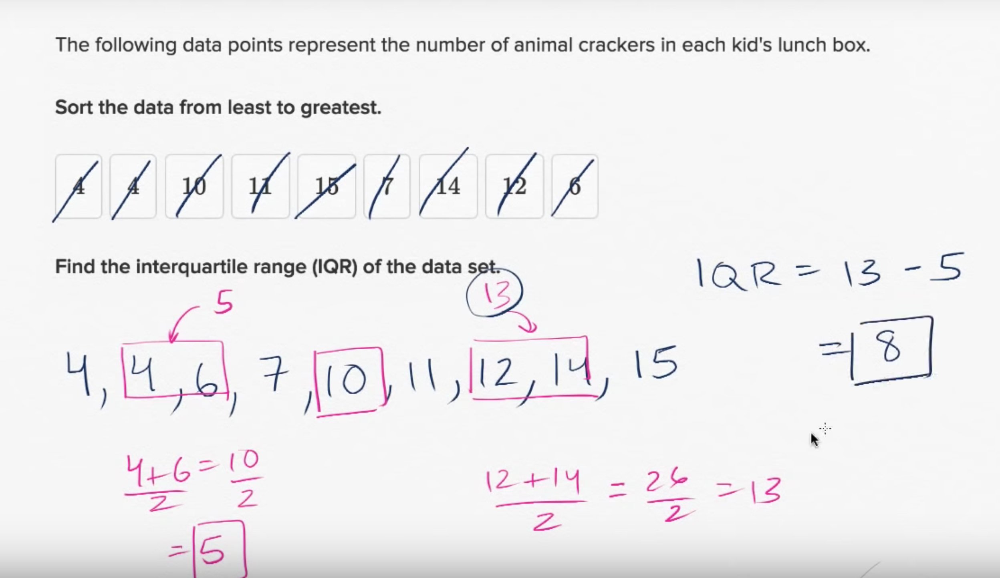
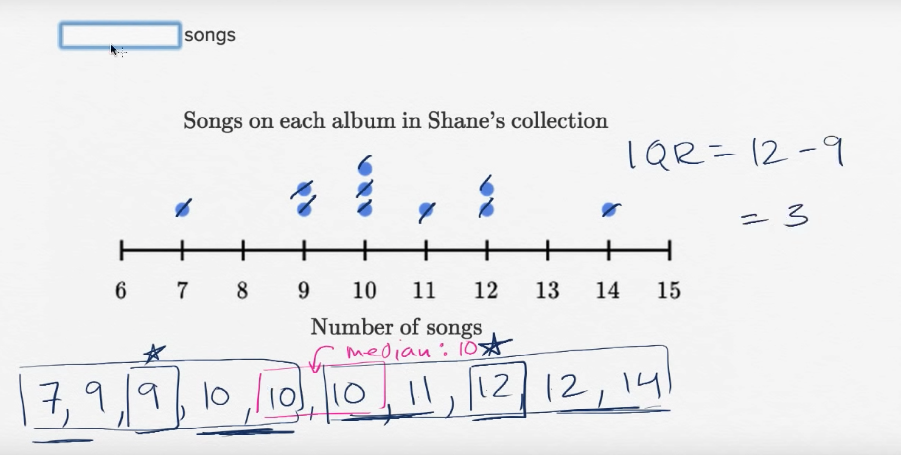
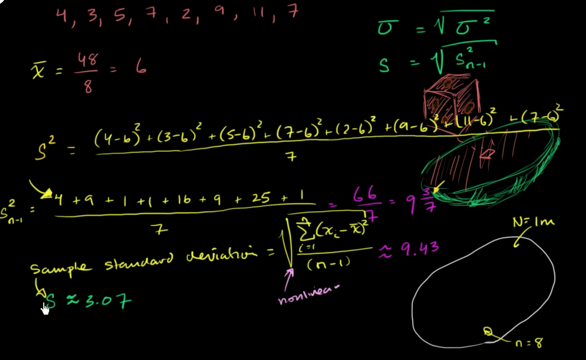
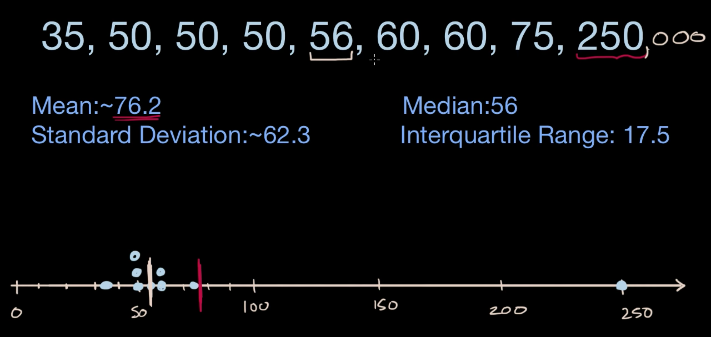
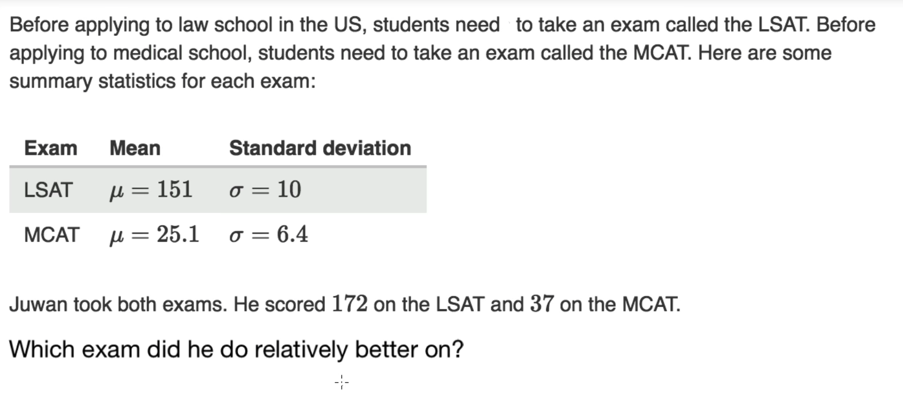
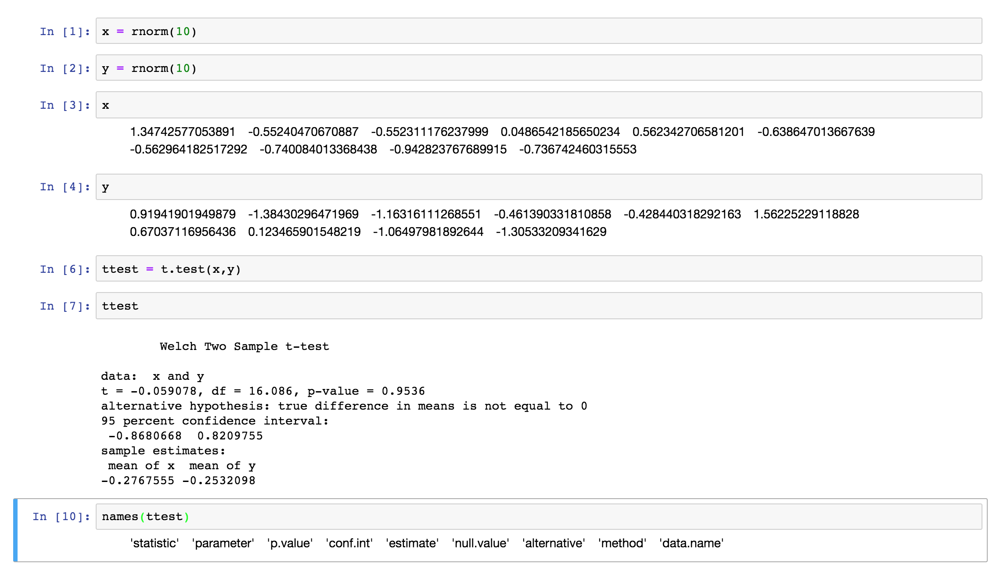
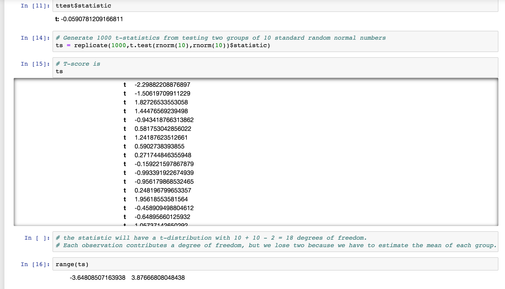

Student's T-Score
IQR
It is difference between 75th and 25th percentiles, or between upper and lower quartiles.  Standard Deviation
It is measure that is used to quantify the amount of variation or dispersion of a set of data values.  Z-Score
Z-score is number of Standard Deviations from Mean for a given data point.Answers
- How usual or unusual certain data point is?

Examples
- The grades on a history midterm at Almond are roughly symmetric with mean of 85 and std.dev of 2
- John scored 86 on this example
zScore = (86-85)/2 = 0.5

LSAT_zScore = (172-151)/10 = 2.1 MCAT_zScore = (37-25.1)/6.4 = 1.8593749999999998 we can say John has done 2 std.devs in LSAT while 1.9 std.devs in MCAT, so it is comparable (difference is only 0.2). If has score a difference of say 2 std.devs we can say he has done better on that exam.
Z-Score
Z-score is number of Standard Deviations from Mean for a given data point
T-test
T-test is used to determine whether the means of two groups are equal to each other.
The assumption for the test is that both groups are sampled from normal distributions with equal variances.
Null hypothesis is that the two means are equal, and the alternative is that they are not.

